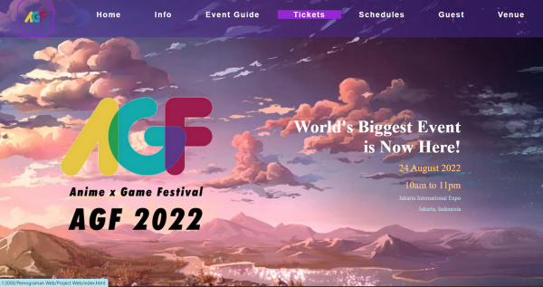
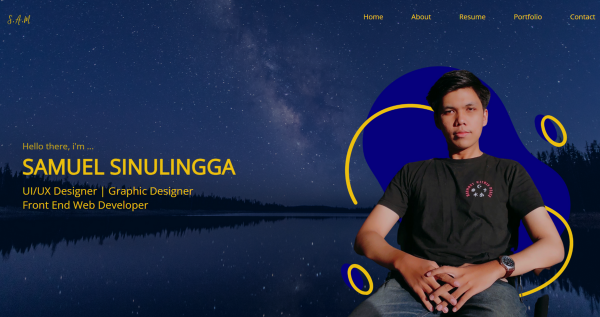
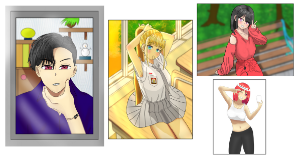
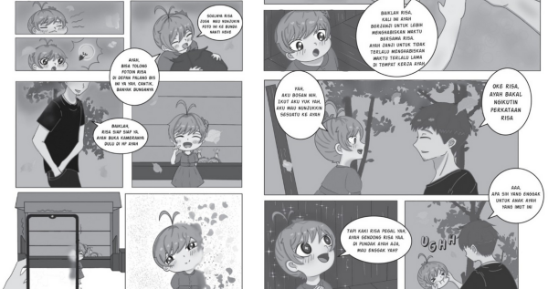

I created this
Value Proposition Canvas during my participation in the Myskill.id
bootcamp to analyze the Pains, Gains, and Jobs to be Done from the customer's
perspective for Netflix, as well as the Gain Creator, Pain Relievers, and
Products & Services from Netflix's product perspective, based on my analysis and assumptions.
I also crafted this User Journey Map while
attending the Myskill.id bootcamp to identify the common user complaints and user feels when upgrading
to Spotify Premium.
Website Design

Anime x Game Festival 2022 (unofficial)
I developed this website as my very first project
at the State Polytechnic of Jakarta, using only HTML and Vanilla CSS without any adjustments for mobile
users or JavaScript.
I designed this website during my participation in
the AppBrewery course, focusing on creating a Bootstrap-based website and executing ideas from the AppBrewery course.
I also designed this website during my participation in the
AppBrewery course, creating a website using Vanilla CSS (float) and executing ideas from the AppBrewery course.

Web Portfolio of Mine :)
This is my second self-designed website where I established a
font and color palette concept for both mobile and PC users. I developed this website using Tailwind CSS and a bit of JavaScript.
I created posters for Instagram content,
paying attention to themes and account alignment. I designed these posters using Photoshop and Canva
as supporting software.
I served as a social media specialist for
my parish's Christmas committee's Instagram account. I aimed to make the account visually appealing
and informative through well-organized feeds and stories. I used Canva and Photoshop for my Instagram editing.
I also designed a logo for my parish's Christmas committee's
Instagram account, following the themes of solidarity and subsidiarity, and using a Christmas color palette. I created
this design using Clip Studio Paint and Photoshop.
I designed T-shirts for KMK PNJ for a special event, manually
creating the logo with Clip Studio Paint and refining it in Photoshop to achieve a streetwear look.
I designed e-certificates for KMK PNJ using Canva, incorporating design elements from the event,
such as batik patterns, to create a fitting atmosphere.

I am also capable of creating Character Illustrations
I have a passion for character illustration,
and I create these illustrations using Clip Studio Paint.

And I am also capable of creating Comics. (ft. @comicclubtgp)
I enjoy creating comic strips as well. For this
project, I collaborated with a team of five individuals over a month, working on the final Comic Rush
for the Comic Club TGP. I created these illustrations using Clip Studio Paint.